More effective C++ notes
More effective C++2
条款22 考虑以操作符复合形式（op=）来取代独身形式
对于大部分的程序员，他们希望——
x = x + y;
x = x - y; 的同时
x += y;
x -= y; 的形式也可以被接受。
为了让复合形式和独身形式都可以很好的运作——我们选则：让前者作为基础来实现
class Rational{
public:
Rational& operator+=(const Rational& rhs);
Rational& operator-=(const Rational& rhs);
}
const Rational operator+(const Rational& lhs,const Rational& rhs){
return Rational(lhs) += rhs;
}
const Rational operator-(const Rational& lhs,const Rational& rhs){
return Rational(lhs) -= rhs;
} 这样的话，我们就只需要维护符合操作符就好了。
事实上，为了扩展性更强一些，我们一般的使用模板来完成通用化的工作：
template<class T>
const T operator+(const T& lhs,const T& rhs){
return T(lhs) += rhs;
}
template<class T>
const T operator-(const T& lhs,const T& rhs){
return T(lhs) -= rhs;
} 但是现在为止我们都没有考虑效率的问题。
注意到复合操作类型不会花费时间构造一个巨大的对象返回。于是我们这样的设计可以让客户程序员选择效率与方便维护中二选一：
// 易于维护的
Rational a,b,c,d,result;
result = a + b + c + d;
// 追求效率的
result = a;
result += b;
result += c;
result += d; 程序的灵活性更好了！
条款23：考虑使用其他库
条款24：了解virtual functions, multiple functions, virtual base classes runtime type identification的成本
当一个虚函数被调用，执行的代码必须对应于调用者的动态类型。我们的编译器可以做到虚函数的处理得益于 virtual table 或 virtual table pointers
我们的vtbl 通常是函数指针架构产生的数组。
比如：
class C1{
public:
C1();
virtual ~C1();
virtual void f1();
void f4() const;
}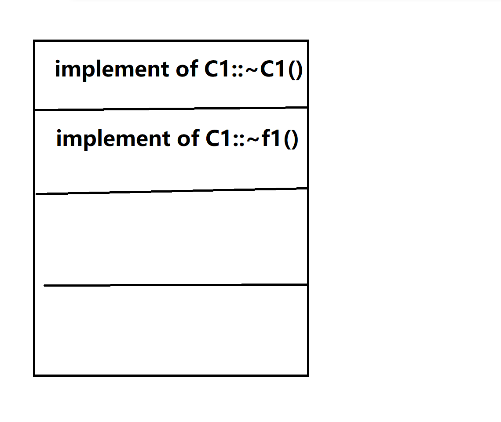
现在，一旦我们的子类继承了父类，并且自己重新实现了一些虚函数，那么——C2（假使它继承了C1）这张虚函数表的新改写函数就会换成子类自己的！
避免将虚函数声明为内联的inline,编译器也会自动忽视之。下面我会提到为什么
当然，只有虚函数表是不够的——我们的类中往往会增加一个函数数组指针，指向这个表！一旦发生继承，这个表就会被一大堆成员包围。
下面来看对于体系类的虚函数调用。还是回到C1，C2类的表
void makeACall(C1* pC1){
pC1()->f1();
} 如果我们只看这点代码，完全不知道程序运行时会调用哪一段代码。编译器是这样处理的：
根据对象的vptr 找到 vtbl
找到被调用的函数在vtbl的指针，然后调用之。
(*pC1->vptr[i])(pC1);你瞧！只有在运行的时候我们才会直到究竟是哪个！而inline跟virtual的设计理念完全冲突！这就是为什么不要给虚函数添加inline!
下面考虑多重继承（相当恐怖的）
这是一个菱形继承：
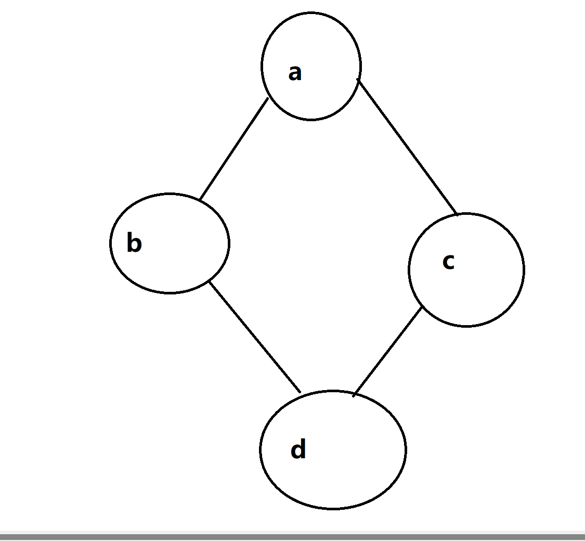
现在，我们视A作为最基本的类：
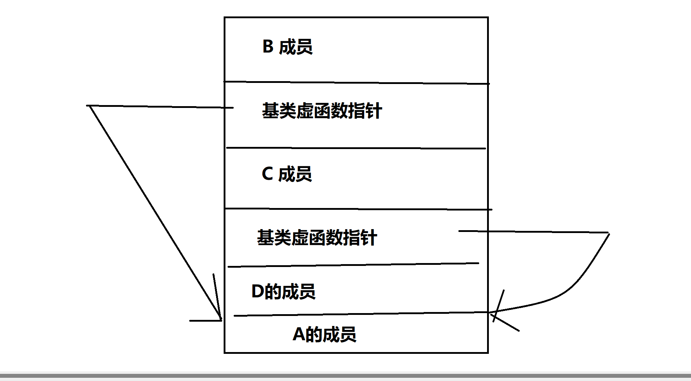
当A内有任何一点虚函数
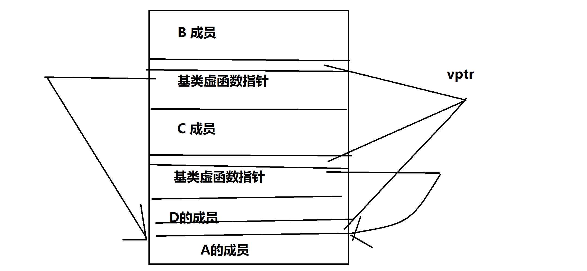
我们看到了虚函数是如何使得对象变大的了
RTTI作为运行时获取对象类型，一个class只需要一个就可以了。我们在vtbl的开头加上一个 type_info对象就可以帮助识别。
| 性质 | 对象大小 | Class数据量增加 | 内联几率降低 |
|---|---|---|---|
| 虚函数 | 是 | 是 | 是 |
| 多重继承 | 是 | 是 | 否 |
| 虚拟基类 | 往往如此 | 有时候 | 否 |
| RTTI | 否 | 是 | 否 |
条款25：将构造函数和非成员函数虚化
我们有必要将构造函数和非成员函数虚化——这是因为我们之间有关系的类可以做到一个构造函数完成更多的事情。而且更加的省精力。
构造函数的虚化有助于我们在实际调用的时候返回期望对象的构造函数！
条款26 限制某个class所能产生的对象数量
允许0个或者1 个对象产出
阻止一个类的产生的最简单的方法就是把构造器放private里面。
那一个呢？配合static和接口函数！
class PrinterJob;
class Printer{
public:
void submitJob(const PrinterJob& job);
void reset();
void performSelfTest();
friend Printer& thePrinter();
private:
Printer();
Printer(const Printer& rhs);
...
}
Printer& thePrinter()
{
static Printer p;
return p;
} 这样一调用，我们就总是调用那个在静态区的变量。
我们也可以把这一大堆东西放到namespace里去，防止冲突！
有一个细节：我们为什么不把这个函数：
Printer& thePrinter()
{
static Printer p;
return p;
} 设置成inline呢？答案是，防止被复制——因为我们把调用函数这个动作直接改成执行代码，这就意味着——这个对象可能会被复制！不要在带有locale static对象的函数中内联！
注意，一个构造函数是private 的类是不允许被继承的！（没办法显著的调用构造器）于是，避免一个具体类继承另一个具体类！
允许对象生生灭灭
注意到：
create Printer object p1;
use p1;
delete p1;
create Printer object p2;
use p2;
delete p2;
create Printer object p3;
use p3;
delete p3; 这样的事情不违反只允许一个对象！但是却不被允许，那么我们有必要整一个新办法
我们加上一个计数器就好了：
class Printer{
public:
class TooManyObj{};
static Printer* makePrinter();
~Printer();
void submitJob(const PrinterJob& job);
void reset();
void performSelfTest();
private:
static size_t numObjects;
static size_t numObjects = 10;
Printer();
Printer(const Printer& rhs);
}
size_t Printer::numObjects = 0;
Printer::Printer(){
if(numObjects >= max_obj){
throw TooManyObj();
}
...
++numObjects;
}
} 也有程序员使用专门计数的类！但这里就不再展开了。
判断对象在哪里（在不在heap?）
不应当直接在class里声明一个bool变量，然后塞到operator new这个函数下，因为：
UPNumber* numArr = new UPNumber[100]; 这下坏了，编译器可能是：先调用operator new在调用构建器！（先开空间，在初始化，我们上面的办法就失效了！）
于是，不妨使用计组学的特性?
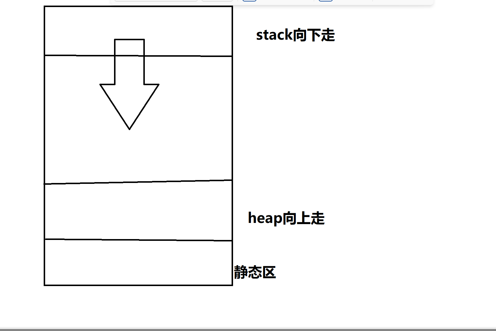
可以给出这样的代码：
bool onHeap(const void* addr){
char onStack;
return address < &onTheStack
} 但是别忘了，我们还有静态区！它无法区分和heap对象和static对象！
事实上，没有通用的办法！
静止对象产生在heap上
很简单了：直接把operator new 和operator delete直接扔到私有区！
条款27：auto_ptr
智能指针主要用于动态内存的管理,同时提供给用户与内置指针一样的使用方法,本条款主要涉及智能指针在构造与析构,复制和赋值,解引等方面的注意点,而非智能指针的实现细节.
智能指针的构造,赋值,析构
智能指针的copy constructor,assignment operator,destructor对应于不同的观念而有不同的实现,主要有三种选择:
不允许对象的共享,在调用copy constructor和assignment时转移对象所有权,这样在调用destructor时就可以直接delete智能指针内含的内置指针,如标准库的auto_ptr,其实现可能像这样:
template<class T>
class auto_ptr {
public:
...
auto_ptr(auto_ptr<T>& rhs);
auto_ptr<T>& operator=(auto_ptr<T>& rhs);
...
};
template<class T>
auto_ptr<T>::auto_ptr(auto_ptr<T>& rhs)
{
pointee = rhs.pointee;
rhs.pointee = 0; // 转移对象所有权
}
template<class T>
auto_ptr<T>& auto_ptr<T>::operator=(auto_ptr<T>& rhs)
{
if (this == &rhs) // 自我赋值的情况
return *this;
delete pointee;
pointee = rhs.pointee; // 转移对象所有权
rhs.pointee = 0;
return *this;
} 值得注意的是,由于auto_ptr的copy constructor被调用时,对象所有权便转移了,像这样:
void printTreeNode(ostream& s, auto_ptr<TreeNode> p)
{ s << *p; }
int main(){
auto_ptr<TreeNode> ptn(new TreeNode);
...
printTreeNode(cout, ptn); //通过传值方式传递auto_ptr
...
} 调用printTreeNode后,ptn所指向的内存便被释放,内含的内置指针也被置为0,但这并不符合用户的预期.这说明不能使用pass-by-value的方式传递auto_ptr给函数,只能使用pass-by-reference.
使用这种策略实现的智能指针的destructor可能像这样:
template<class T>
SmartPtr<T>::~SmartPtr()
{
if (*this owns *pointee) {
delete pointee;
}
} 2). 不允许对象的共享,调用copy constructor和assignment operator时进行深度拷贝——产生新对象.这种设计思想较简单,缺点也较明显:新对象的产生需要消耗资源.这里不再讨论
3). 允许对象的共享,使用引用计数,调用copy constructor和assignment operator增加引用计数的个数.当引用计数的个数为0时便析构对象并释放内存,如标准库的shared_ptr,关于引用计数的具体实现见[条款29](http://i.cnblogs.com/PostDone.aspx?postid=4857432&actiontip=存为草稿成功).
实现Dereference Operators(解引操作符)
主要讨论operator*和operator->的实现,前者放回所指对象的引用,像这样:
template<class T>
T& SmartPtr<T>::operator*() const
{
perform "smart pointer" processing;
return *pointee;
} 如果程序采用了lazy fetching(见[条款17](http://www.cnblogs.com/reasno/p/4830677.html))策略,就有可能需要为pointers变换出一个新对象.需要注意的是,operator*返回的是引用,如果返回对象,可能会产生由于SmartPtr指向的是T的派生类对象而非T类对象而造成的切割问题.
operator->和operator*类似,operator->返回指针.
对于使用引用计数的shared_ptr,问题还未停止,它允许多个智能指针共享相同对象,但前提是这些指针所指向的对象相同.由于operator*和operator->返回所指对象的引用和指针,这可能导致其所指对象被更改,但原则上共享同一块内存的其他智能指针却要求所指对象保持不变.因此有必要在调用operator*和operator->的时候开辟一块新内存,使调用operator*和operator->的智能指针指向这块新内存以防止共享内存被篡改,像这样:
template<class T>
T& SmartPtr<T>::operator*() const{
if(number of reference!=1){
pointee=new T(*pointee);
--reference number of the old object;
set the reference number of the new object to 1;
}
return *pointee;
}测试Smart Pointers是否为Null
直接的策略是定义隐式转换操作符operator void*,使得以下操作可以通过编译:
if (ptn == 0) ... // 正确
if (ptn) ... // 正确
if (!ptn) ... //正确 但隐式转换操作符很容易被滥用,它使得不同类型的指针可以相比较,以下代码可以通过编译:
SmartPtr<Apple> pa;
SmartPtr<Orange> po;
...
if (pa == po) ...//可以通过编译 尽管pa和po是不同类型的智能指针,但由于没有定义Smart<Apple>和Smart<Orange>为参数的operator==,因此编译器默认调用operator void*,使得以上代码通过编译.
一种差强人意的方法是允许测试null,但使用!操作符,如果内置指针为null,便返回true,客户端要测试智能指针是否为null,就要像这样:
SmartPtr<TreeNode> ptn;
...
if (!ptn) {
...
}
else {
...
} 但以下做法却被禁止:
if (ptn == 0) ...
if (ptn) ... `iostream`程序库不仅允许隐式类型转换`void*`,还提供`operator!` ,C++标准库中,"隐式转换为void*"已被"隐式转换为bool"取代,而operator bool总是返回operator!的反.
将Smart Pointers转换为Dumb Pointers
有时要兼容并未使用智能指针的程序库,就要允许智能指针到内置指针的转换,直接的思路还是隐式转换操作符:
template<class T>
class DBPtr {
public:
...
operator T*() { return pointee; }
...
};但是正如多次强调的,隐式转换操作符很容易被滥用,它使得客户可以轻易获得内置指针,从而绕过智能指针的控制,像这样:
class Tuple{...};
void processTuple(DBPtr<Tuple>& pt)
{
Tuple *rawTuplePtr = pt; // 得到内置指针
use rawTuplePtr to modify the tuple
} 像这样的操作也会被通过:
DBPtr<Tuple> pt=new Tuple;
delete pt;//通过,执行隐式类型转换 但这几乎肯定会造成错误,因为pt的析构函数执行时可能再次delete同一块内存.
此外,对于采用引用计数的实现版本来说,"允许clinets直接使用dumb pointers"往往会导致导致簿记方面的错误,造成严重后果,
即使实现了隐式转换操作符,但它还是不能做到提供和内置指针完全一样的行为,因为编译器禁止连续隐式调用自定义的隐式类型转换,像这样的使用会失败:
class TupleAccessors {
public:
TupleAccessors(const Tuple *pt); // Tuple到TupleAccessor的转换
...
};
TupleAccessors merge(const TupleAccessor& ta1,const TupleAccessors& ta2);
DBPtr<Tuple> pt1, pt2;
...
merge(pt1,pt2);//调用会出错 尽管`DBPtr<Tuple>`到`Tuple*`再到`TupleAccessor`的转换就可以匹配merge的参数,但编译器禁止这么做.
解决方法是使用普通成员函数进行显式转换以代替隐式转换操作符,像这样:
class DBPtr {
public:
...
T* toPrimary() { return pointee; }
...
};Smart Pointers和”与继承有关的”类型转换
两个类之间有继承关系,但以这两个类为参数具现化的类模板却没有继承关系,由于智能指针是类模板,因此智能指针的包装会屏蔽内置指针的继承关系,例如对于以下继承层次:
class MusicProduct {
public:
MusicProduct(const string& title);
virtual void play() const = 0;
virtual void displayTitle() const = 0;
...
};
class Cassette: public MusicProduct {
public:
Cassette(const string& title);
virtual void play() const;
virtual void displayTitle() const;
...
};
class CD: public MusicProduct {
public:
CD(const string& title);
virtual void play() const;
virtual void displayTitle() const;
...
}
void displayAndPlay(const MusicProduct* pmp, int numTimes)
{
for (int i = 1; i <= numTimes; ++i) {
pmp->displayTitle();
pmp->play();
} 整个继承体系像这样:
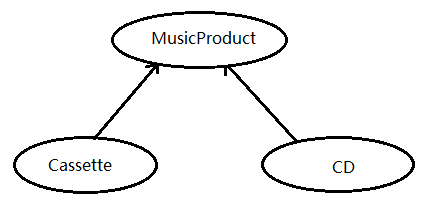
由于各个类的继承关系,可以利用指针的多态实现面向对象编程,像这样:
Cassette *funMusic = new Cassette("Alapalooza");
CD *nightmareMusic = new CD("Disco Hits of the 70s");
displayAndPlay(funMusic, 10);
displayAndPlay(nightmareMusic, 0); 但当指针经过封装成为智能指针之后,正如开始所说,以下代码将无法通过编译：
void displayAndPlay(const SmartPtr<MusicProduct>& pmp,int numTimes);
SmartPtr<Cassette> funMusic(new Cassette("Alapalooza"));
SmartPtr<CD> nightmareMusic(new CD("Disco Hits of the 70s"));
displayAndPlay(funMusic, 10); // 错误!
displayAndPlay(nightmareMusic, 0); // 错误!这是由于MusicProduct,Cassette,CD之间有继承关系,但智能指SmartPtr<MusicProduct>,SmartPtr<Cassette>,SmartPtr<CD>之间却没有内在的继承关系.
最直接的解决方法是为每一个智能指针类定义一个隐式类型转换操作符,像这样:
class SmartPtr<Cassette> {
public:
operator SmartPtr<MusicProduct>()
{ return SmartPtr<MusicProduct>(pointee); }
...
private:
Cassette *pointee;
};
class SmartPtr<CD> {
public:
operator SmartPtr<MusicProduct>()
{ return SmartPtr<MusicProduct>(pointee); }
...
private:
CD *pointee;
}; 这种方法可以解决类型转换的问题,但是却治标不治本:一方面,必须为每一个智能指针实例定义隐式类型转换操作符,这无疑与模板的初衷背道相驰;另一方面,类的继承层次可能很庞大,采用以上方式,继承层次的最底层类的负担将会非常大——必须为对象直接或间接继承的每一个基类提供隐式类型转换操作符.
"将nonvirtual member function声明为templates"是C++后来接入的一个性质,使用它可以从根本上解决饮食类型转换的问题,像这样:
template<class T>
class SmartPtr {
public:
SmartPtr(T* realPtr = 0);
T* operator->() const;
T& operator*() const;
template<class newType> // 模板成员函数
operator SmartPtr<newType>()
{
return SmartPtr<newType>(pointee);
}
...
}; 这个成员函数模板将智能指针之间的隐式类型转换交由底层内置指针来完成,保证了指针转换的"原生态":如果底层指针能够转换,那么包装后的智能指针也能够进行转换.唯一的缺点是它是通过指针之间的隐式类型转换来实现指针的多态,也就是说,它实际上并不能区分对象之间的继承层次,假如扩充MusicProduct的继承体系,加上一个新的CasSingle class,像这样:
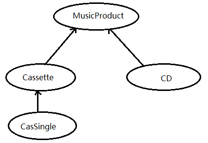
那么对于以下代码:


template<class T>
class SmartPtr { ... };
void displayAndPlay(const SmartPtr<MusicProduct>& pmp,
int howMany);
void displayAndPlay(const SmartPtr<Cassette>& pc,
int howMany);
SmartPtr<CasSingle> dumbMusic(new CasSingle("Achy Breaky Heart"));
displayAndPlay(dumbMusic, 1);//错误，隐式类型转换函数的调用具有二义性 正如之前所言,使用隐式类型转换操作符实现的指针多态并不能区分对象的继承层次,也就是说将SmartPtr<CasSingle>转为SmartPtr<Cassette>&和转为SmartPtr<MusicProduct>&具有同样的优先级,因此造成二义性.而内置指针却能做到这一点,它优先将CasSingle绑定到Cassette&,因为CaSingle直接继承自Cassette.此外,以上策略还有移植性不高的缺点:有些编译器可能并不支持member templates.
对于内置指针,const修饰的含义因其位置而不同:
CD goodCD("Flood");
const CD *p; // p 是一个non-const 指针,指向 const CD 对象
CD * const p = &goodCD; // p 是一个const 指针,指向non-const CD 对象;因为 p 是const,它必须在定义时就被初始化
const CD * const p = &goodCD; // p 是一个const 指针,指向一个 const CD 对象 但对于智能指针,只有一个地方可以放置const,因此cosnt只能施行于指针之上,而不能施行于指针所指对象之上:
const SmartPtr<CD> p=&goodCD; 要是const修饰所值对象很简单,像这样:
SmartPtr<const CD> p=&goodCD; 由此方法可以实现和内置指针相同的四种指针:
SmartPtr<CD> p; // non-const 对象, non-const 指针
SmartPtr<const CD> p; // const 对象,non-const 指针
const SmartPtr<CD> p = &goodCD; // non-const 对象,const 指针
const SmartPtr<const CD> p = &goodCD; // const 对象,const 指针 但这种方法仍有缺陷,正如经由模板包装之后,有继承关系的两个类完全没有关系一样,经由智能指针模板包装后的const和non-const对象完全不同,像这样看起来理所当然的代码通不过编译:
SmartPtr<CD> pCD = new CD("Famous Movie Themes");
SmartPtr<const CD> pConstCD = pCD; 使用之前的隐式类型转换技术可以顺带解决这个问题,但又有所区别:const与non-const的转换是单向的,即可以对const指针做的事也可以对non-const指针进行,但可以对non-const指针做的事未必可以对const指针进行.这与public继承类似,利用这种性质,令每一个smart pointer-to-T-class public继承一个对应的smart pointer-to-const-T class:
template<class T> // 指向const 对象的
class SmartPtrToConst {
protected:
union {
const T* constPointee; // 提供给SmartPtrToConst 访问
T* pointee; // 提供给SmartPtr 访问
};
};
template<class T>
class SmartPtr: public SmartPtrToConst<T> {
public:
template<class constType>
operator SmartPtrToConst<constType>();
... //没有额外数据成员
}; SmartPtrToConst使用了union,这样constPointee和pointee共享同一块内存SmartPtrToConst使用constPointee,SmartPtr使用pointee.
现在,使用SmartPtrToConst和SmartPtr分别代表指向const和non-const对象的智能指针,以下代码可以通过编译:
SmartPtr<CD> pCD = new CD("Famous Movie Themes");
SmartPtrToConst<CD> pConstCD = pCD;\8. 从2-7的讨论可以看出,智能指针功能强大,但索要付出的代价也很高,此外,智能指针无论如何也不能完全替代内置指针.当然,尽管内置指针在实现和维护方面需要大量技巧,但与其强大的功能相比在多数情况下还是值得的.
条款28：引用计数
引用计数是这样一个技巧，它允许多个有相同值的对象共享这个值的实现。这个技巧有两个常用动机。第一个是简化跟踪堆中的对象的过程。一旦一个对象通过调用new被分配出来，最要紧的就是记录谁拥有这个对象，因为其所有者－－并且只有其所有者－－负责对这个对象调用delete。但是，所有权可以被从一个对象传递到另外一个对象（例如通过传递指针型参数），所以跟踪一个对象的所有权是很困难的。象auto_ptr（见Item M9）这样的类可以帮助我们，但经验显示大部分程序还不能正确地得到这样的类。引用计数可以免除跟踪对象所有权的担子，因为当使用引用计数后，对象自己拥有自己。当没人再使用它时，它自己自动销毁自己。因此，引用计数是个简单的垃圾回收体系。
第二个动机是由于一个简单的常识。如果很多对象有相同的值，将这个值存储多次是很无聊的。更好的办法是让所有的对象共享这个值的实现。这么做不但节省内存，而且可以使得程序运行更快，因为不需要构造和析构这个值的拷贝。
和大部分看似简单的主意一样，这个动机也有一个曲折而有趣的细节。在其中必须有一个正确实现的引用计数体系。在开始钻研细节前，让我们掌握一些基础。一个好主意是先着眼于我们将可能如何遇到多个对象有相同的值。这儿有一个：
class String { // the standard string type may
public: // employ the techniques in this Item, but that is not required
String(const char *value = "");
String& operator=(const String& rhs);
...
private:
char *data;
};
String a, b, c, d, e;
a = b = c = d = e = "Hello"; 看起来，对象a到e都有相同的值“Hello”。其值的形态取决于String类是怎么实现的，但通常的实现是每个string对象有一个这个值的拷贝。例如，String的赋值操作可能实现为这样：
String& String::operator=(const String& rhs)
{
if (this == &rhs) return *this; // see Item E17
delete [] data;
data = new char[strlen(rhs.data) + 1];
strcpy(data, rhs.data);
return *this; // see Item E15
}根据这个实现，我们可以推测，这5个对象及其值如下：
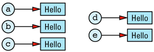
其冗余是显然的。在一个理想的世界中，我们希望将上图改为这样：

这里，只存储了一个“Hello”的拷贝，所有具有此值的String对象共享其实现。
实际世界中，实现这个主意是不可能的，因为我们需要跟踪多少对象共享同一个值。如果上面的对象a被赋了“Hello”以外的另外一个值，我们不能摧毁值“Hello”，因为还有四个对象需要它。另一方面，如果只有一个对象有“Hello”这个值，当其超出生存空间时，没有对象具有这个值了，我们必须销毁这个值以避免资源泄漏。
保存当前共享/引用同一个值的对象数目的需求意味着我们的那张图必须增加一个计数值（引用计数）：
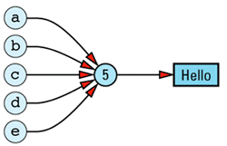
（有些人将其叫作use count，但我不是其中之一。C++有很多它自己的特性，最后需要的一个是专业名词的派别之争。）
创建一个带引用计数的String类并不困难，但需要注意一些细节，所以我们将略述这样一个类的大部分常用成员函数的实现。然而，在开始之前，认识到“我们需要一个地方来存储这个计数值”是很重要的。这个地方不能在String对象内部，因为需要的是每个String值一个引用计数值，而不是每个String对象一个引用计数。这意味着String值和引用计数间是一一对应的关系，所以我们将创建一个类来保存引用计数及其跟踪的值。我们叫这个类StringValue，又因为它唯一的用处就是帮助我们实现String类，所以我们将它嵌套在String类的私有区内。另外，为了便于Sting的所有成员函数读取其数据区，我们将StringValue申明为struct。需要知道的是：将一个struct内嵌在类的私有区内，能便于这个类的所有成员访问这个结构，但阻止了其它任何人对它的访问（当然，除了友元）。
基本设计是这样的：
class String {
public:
... // the usual String member
// functions go here
private:
struct StringValue { ... }; // holds a reference count and a string value
StringValue *value; // value of this String
}; 我们可以给这个类起个其它名字（如RCString）以强调它使用了引用计数，但类的实现不该是类的用户必须关心的东西，用户只关心类的公有接口。而我们带引用计数的String版本与不带引用计数的版本，其接口完全相同，所以为什么要用类的名字来把问题搅混呢？真的需要吗？所以我们没有这么做。
这是StringValue的实现：
class String {
private:
struct StringValue {
int refCount;
char *data;
StringValue(const char *initValue);
~StringValue();
};
...
};
String::StringValue::StringValue(const char *initValue): refCount(1)
{
data = new char[strlen(initValue) + 1];
strcpy(data, initValue);
}
String::StringValue::~StringValue()
{
delete [] data;
} 这是其所有的一切，很清楚，这不足以实现带引用计数的String类。一则，没有拷贝构造函数和赋值运算；
二则，没有提供对refCount的操作。别担心，少掉的功能将由String类提供。StringValue的主要目的是提供一个空间将一个特别的值和共享此值的对象的数目联系起来。StringValue给了我们这个，这就足够了。
我们现在开始处理String的成员函数。首先是构造函数：
class String {
public:
String(const char *initValue = "");
String(const String& rhs);
...
}; 第一个构造函数被实现得尽可能简单。我们用传入的char *字符串创建了一个新的StringValue对象，并将我们正在构造的string对象指向这个新生成的StringValue：
String::String(const char *initValue): value(new StringValue(initValue))
{
} 这样的用户代码：
String s("More Effective C++"); 生成的数据结构是这样的：

String对象是独立构造的，有同样初始化值的对象并不共享数据，所以，这样的用户代码：
String s1("More Effective C++");
String s2("More Effective C++"); 产生这样的数据结构：
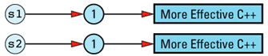
消除这样的副本是可能的：通过让String（或StringValue）对象跟踪已存在的StringValue对象，并只在是不同串时才创建新的对象。但这样的改进有些偏离目标。于是，我将它作为习题留给读者。
String的拷贝构造函数很高效：新生成的String对象与被拷贝的对象共享相同的StringValue对象：
String::String(const String& rhs): value(rhs.value)
{
++value->refCount;
}这样的代码：
String s1("More Effective C++");
String s2 = s1;产生这样的数据结构：

这肯定比通常的（不带引用计数的）string类高效，因为不需要为新生成的string值分配内存、释放内存以及将内容拷贝入这块内存。现在，我们只不过是拷贝了一个指针并增加了一次引用计数。
String类的析构函数同样容易实现，因为大部分情况下它不需要做任何事情。只要引用计数值不是0，也就是至少有一个String对象使用这个值，这个值就不可以被销毁。只有当唯一的使用者被析构了（也就是引用计数在进入函数前已经为1时），String的析构函数才摧毁StringValue对象：
class String {
public:
~String();
...
};
String::~String()
{
if (--value->refCount == 0)
{
delete value;
}
} 和没有引用计数的版本比较一下效率。那样的函数总调用delete，当然会有一个相当程度的运行时间的代价。现在提供的String对象们实际上有时具有相同的值，上面的这个实现在此时只需要做一下减少引用计数并与0进行比较。
如果在这个问题上引用计数没有向外界表现出来，你就根本不需要花注意力。
这就是String的构造和析构，我们现在转到赋值操作：
class String {
public:
String& operator=(const String& rhs);
...
}; 当用户写下这样的代码：
s1 = s2; // s1 and s2 are both String objects 其结果应该是s1和s2指向相同的StringValue对象。对象的引用计数应该在赋值时被增加。并且，s1原来指向的StringValue对象的引用计数应该减少，因为s1不再具有这个值了。如果s1是拥有原来的值的唯一对象，这个值应该被销毁。在C++中，其实现看起来是这样的：
String& String::operator=(const String& rhs)
{
if (value == rhs.value)
{ // do nothing if the values
return *this; // are already the same; this
} // subsumes the usual test of
// this against &rhs (see Item E17)
if (--value->refCount == 0)
{ // destroy *this's value if
delete value; // no one else is using it
}
value = rhs.value; // have *this share rhs's
++value->refCount; // value
return *this;
} 围绕我们的带引用计数的String类，考虑一下数组下标操作（[]），它允许字符串中的单个字符被读或写：
class String {
public:
const char&
operator[](int index) const; // for const Strings
char& operator[](int index); // for non-const Strings
...
}; 这个函数的const版本的实现很容易，因为它是一个只读操作，String对象的值不受影响：
const char& String::operator[](int index) const
{
return value->data[index];
} （这个函数实现了C++传统意义上的下标索引（根本不会说“不”）。如果你想加上参数检查，这是非常容易的。）
非const的operator[]版本就是一个完全不同的故事了。它可能是被调用了来读一个字符，也可能被调用了来写一个字符：
String s;
...
cout << s[3]; // this is a read
s[5] = 'x'; // this is a write 我们希望以不同的方式处理读和写。简单的读操作，可以用与const的operator[]类似的方式实现，而写操作必须用完全不同的方式来实现。
当我们修改一个String对象的值时，必须小心防止修改了与它共享相同StringValue对象的其它String对象的值。不幸的是，C++编译器没有办法告诉我们一个特定的operator[]是用作读的还是写的，所以我们必须保守地假设“所有”调用非const operator[]的行为都是为了写操作。（Proxy类可以帮助我们区分读还是写，见Item M30。）
为了安全地实现非const的operator[]，我们必须确保没有其它String对象在共享这个可能被修改的StringValue对象。简而言之，当我们返回StringValue对象中的一个字符的引用时，必须确保这个StringValue的引用计数是1。这儿是我们的实现：
char& String::operator[](int index)
{
// if we're sharing a value with other String objects,
// break off a separate copy of the value for ourselves
if (value->refCount > 1) {
--value->refCount; // decrement current value'srefCount, because we won't be using that value any more
value = // make a copy of the
new StringValue(value->data); // value for ourselves
}
// return a reference to a character inside our
// unshared StringValue object
return value->data[index];
} 这个“与其它对象共享一个值直到写操作时才拥有自己的拷贝”的想法在计算机科学中已经有了悠久而著名的历史了，尤其是在操作系统中：进程共享内存页直到它们想在自己的页拷贝中修改数据为止。这个技巧如此常用，以至于有一个名字：写时拷贝。它是提高效率的一个更通用方法－－缓式评估原则－－的特例。
大部分情况下，写时拷贝可以同时保证效率和正确性。只有一个挥之不去的问题。看一下这样的代码：
String s1 = "Hello";
char *p = &s1[1];数据结构是这样的：
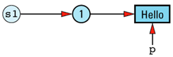
现在看增加一条语句：
String s2 = s1; String的拷贝构造函数使得s2共享s1的StringValue对象，所以数据结构将是：
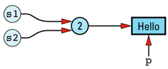
下面这样的语句将有不受欢迎的结果：
*p = 'x'; // modifies both s1 and s2! String的拷贝构造函数没有办法检测这样的问题，因为它不知道指向s1拥有的StringValue对象的指针的存在。并且，这个问题不局限于指针：它同样存在于有人保存了一个String的非const operator[]的返回值的引用的情况下。
至少有三种方法来应付这个问题。第一个是忽略它，假装它不存在。这是实现带引用计数的String类的类库中令人痛苦的常见问题。如果你有带引用计数的String类，试一下上面的例子，看你是否很痛苦。即使你不能确定你操作的是否是带引用计数的String类，也无论如何应该试一下这个例子。由于封装，你可能使用了一个这样的类型而不自知。
不是所以的实现都忽略这个问题。稍微好些的方法是明确说明它的存在。通常是将它写入文档，或多或少地说明“别这么做。如果你这么做了，结果为未定义。”无论你以哪种方式这么做了（有意地或无意地），并抱怨其结果时，他们辩解道：“好了，我们告诉过你别这么做的。”这样的实现通常很方便，但它们在可用性方面留下了太多的期望。
第三个方法是排除这个问题。它不难实现，但它将降低一个值共享于对象间的次数。它的本质是这样的：在每个StringValue对象中增加一个标志以指出它是否为可共享的。在最初（对象可共享时）将标志打开，在非const的operator[]被调用时将它关闭。一旦标志被设为false，它将永远保持在这个状态（注10）。
这是增加了共享标志的修改版本：
class String {
private:
struct StringValue {
int refCount;
bool shareable; // add this
char *data;
StringValue(const char *initValue);
~StringValue();
};
...
};
String::StringValue::StringValue(const char *initValue)
:refCount(1),shareable(true) // add this
{
data = new char[strlen(initValue) + 1];
strcpy(data, initValue);
}
String::StringValue::~StringValue()
{
delete [] data;
} 如你所见，并不需要太多的改变；需要修改的两行都有注释。当然，String的成员函数也必须被修改以处理这个共享标志。这里是拷贝构造函数的实现：
String::String(const String& rhs)
{
if (rhs.value->shareable) {
value = rhs.value;
++value->refCount;
}
else {
value = new StringValue(rhs.value->data);
}
} 所有其它的成员函数也都必须以类似的方法检查这个共享标志。非const的operator[]版本是唯一将共享标志设为false的地方：
char& String::operator[](int index)
{
if (value->refCount > 1) {
--value->refCount;
value = new StringValue(value->data);
}
value->shareable = false; // add this
return value->data[index];
} 如果使用Item M30中的proxy类的技巧以区分读写操作，你通常可以降低必须被设为不可共享的StringValue对象的数目。
引用计数不只用在字符串类上，只要是多个对象具有相同值的类都可以使用引用计数。改写一个类以获得引用计数需要大量的工作，而我们已经有太的工作需要做了。这样不好吗：如果我们将引用计数的代码写成与运行环境无关的，并能在需要时将它嫁接到其它类上？当然很好。很幸运，有一个方法可以实现它（至少完成了绝大部分必须的工作）。
第一步是构建一个基类RCObject，任何需要引用计数的类都必须从它继承。RCObject封装了引用计数功能，如增加和减少引用计数的函数。它还包含了当这个值不再被需要时摧毁值对象的代码（也就是引用计数为0时）。最后，它包含了一个字段以跟踪这个值对象是否可共享，并提供查询这个值和将它设为false的函数。不需将可共享标志设为true的函数，因为所有的值对象默认都是可共享的。如上面说过的，一旦一个对象变成了不可共享，将没有办法使它再次成为可共享。
RCObject的定义如下：
class RCObject {
public:
RCObject();
RCObject(const RCObject& rhs);
RCObject& operator=(const RCObject& rhs);
virtual ~RCObject() = 0;
void addReference();
void removeReference();
void markUnshareable();
bool isShareable() const;
bool isShared() const;
private:
int refCount;
bool shareable;
}; RCObjcet可以被构造（作为派生类的基类部分）和析构；可以有新的引用加在上面以及移除当前引用；其可共享性可以被查询以及被禁止；它们可以报告当前是否被共享了。这就是它所提供的功能。对于想有引用计数的类，这确实就是我们所期望它们完成的东西。注意虚析构函数，它明确表明这个类是被设计了作基类使用的（见Item E14）。同时要注意这个析构函数是纯虚的，它明确表明这个类只能作基类使用。
RCOject的实现代码：
RCObject::RCObject(): refCount(0), shareable(true) {}
RCObject::RCObject(const RCObject&): refCount(0), shareable(true) {}
RCObject& RCObject::operator=(const RCObject&)
{
return *this;
}
RCObject::~RCObject() {} // virtual dtors must always
// be implemented, even if
// they are pure virtual
// and do nothing (see also
// Item M33 and Item E14)
void RCObject::addReference()
{
++refCount;
}
void RCObject::removeReference()
{
if (--refCount == 0)
delete this;
}
void RCObject::markUnshareable()
{
shareable = false;
}
bool RCObject::isShareable() const
{
return shareable;
}
bool RCObject::isShared() const
{
return refCount > 1;
} 可能很奇怪，我们在所有的构造函数中都将refCount设为了0。这看起来违反直觉。确实，最少，构造这个RCObject对象的对象引用它！在它构造后，只需构造它的对象简单地将refCount设为1就可以了，所以我们没有将这个工作放入RCObject内部。这使得最终的代码看起来很简短。
另一个奇怪之处是拷贝构造函数也将refCount设为0，而不管被拷贝的RCObject对象的refCount的值。这是因为我们正在构造新的值对象，而这个新的值对象总是未被共享的，只被它的构造者引用。再一次，构造者负责将refCount设为正确的值。
RCObject的赋值运算看起来完全出乎意料：它没有做任何事情。这个函数不太可能被调用的。RCObject是基于引用计数来共享的值对象的基类，它不该被从一个赋给另外一个，而应该是拥有这个值的对象被从一个赋给另外一个。在我们这个设计里，我们不期望StringValue对象被从一个赋给另外一个，我们期望在赋值过程中只有String对象被涉及。在String参与的赋值语句中，StringValue的值没有发生变化，只是它的引用计数被修改了。
不过，可以想象，一些还没有写出来的类在将来某天可能从RCObject派生出来，并希望允许被引用计数的值被赋值（见Item M23和Item E16）。如果这样的话，RCObject的赋值操作应该做正确的事情，而这个正确的事情就是什么都不做。想清楚了吗？假设我们希望允许在StringValue对象间赋值。对于给定的StringValue对象sv1和sv2，在赋值过程中，它们的引用计数值上发生什么？
sv1 = sv2; // how are sv1's and sv2's reference counts affected? 在赋值之前，已经有一定数目的String对象指向sv1。这个值在赋值过程中没有被改变，因为只是sv1的值被改变了。同样的，一定数目的String对象在赋值之前指向前v2，在赋值后，同样数目的对象指向sv2。sv2的引用计数同样没有改变。当RCObject在赋值过程中被涉及时，指向它的对象的数目没有受影响，因此RCObject::operator=不应该改变引用计数值。上面的实现是正确的。违反直觉？可能吧，但它是正确的。
RCObject::removeReference的代码不但负责减少对象的refCount值，还负责当refCount值降到0时析构对象。后者是通过delete this来实现的，如Item M27中解释的，这只当我们知道*this是一个堆对象时才安全。要让这个类正确，我们必须确保RCObject只能被构建在堆中。实现这一点的常用方法见Item M27，但我们这次采用一个特别的方法，这将在本条款最后讨论。
为了使用我们新写的引用计数基类，我们将StringValue修改为是从RCObject继承而得到引用计数功能的：
class String {
private:
struct StringValue: public RCObject {
char *data;
StringValue(const char *initValue);
~StringValue();
};
...
};
String::StringValue::StringValue(const char *initValue)
{
data = new char[strlen(initValue) + 1];
strcpy(data, initValue);
}
String::StringValue::~StringValue()
{
delete [] data;
} 这个版本的StringValue和前面的几乎一样，唯一改变的就是StringValue的成员函数不再处理refCount字段。RCObject现在接管了这个工作。
不用感觉不舒服，如果你注意到嵌套类（StringValue）从一个与包容类（String）无关的类（RCObject）继承而来的话。它第一眼看上去是有些古怪，但完全合理。嵌套类和其它类是完全相同的，所以它有自由从它喜欢的任何其它类继承。以后，你不用第二次思考这种继承关系了。
RCObject类给了我们一个存储引用计数的地方，并提供了成员函数供我们操作引用计数，但调用这些函数的动作还必须被手工加入其它类中。仍然需要在String的拷贝构造函数和赋值运算函数中调用StringValue的addReference和 removeReference函数。这很笨拙。我们想将这些调用也移入一个可重用的类中，以使得String这样的类的作者不用再担心引用计数的任何细节。能实现吗？C++支持这样的重用吗？
能。没有一个简单的方法将所有引用计数方面的工作从所有的类中移出来；但有一个方法可以从大部分类中将大部分工作移出来。（在一些类中，你可以消除所有引用计数方面的代码，但我们的String类不是其中之一。有一个成员函数搞坏了这件事，我希望你别吃惊，它是我们的老对头：非const版本的operator[]。别放心上，我们最终制服了这家伙。）
每个String对象包含一个指针指向StringValue对象：
class String {
private:
struct StringValue: public RCObject { ... };
StringValue *value; // value of this String
...
}; 我们必须操作StringValue对象的refCount字段，只要任何时候任一个指向它的指针身上发生了任何有趣的事件。“有趣的事件”包括拷贝指针、给指针赋值和销毁指针。如果我们能够让指针自己检测这些事件并自动地执行对refCount字段的必须操作，那么我们就自由了。不幸的是，指针功能很弱，对任何事情作检测并作出反应都是不可能的。还好，有一个办法来增强它们：用行为类似指针的对象替代它们，但那样要多做很多工作了。
这样的对象叫灵巧指针，你可以在Item M28这看到它的更多细节。就我们这儿的用途，只要知道这些就足够了：灵巧指针对象支持成员选择（->）和反引用（*）这两个操作符，就象真的指针一样，并和内建指针一样是强类型的：你不能将一个指向T的灵巧指针指向一个非T类型的对象。
这儿是供引用计数对象使用的灵巧指针模板：
// template class for smart pointers-to-T objects. T must
// support the RCObject interface, typically by inheriting
// from RCObject
template<class T>
class RCPtr {
public:
RCPtr(T* realPtr = 0);
RCPtr(const RCPtr& rhs);
~RCPtr();
RCPtr& operator=(const RCPtr& rhs);
T* operator->() const; // see Item 28
T& operator*() const; // see Item 28
private:
T *pointee; // dumb pointer this
// object is emulating
void init(); // common initialization
}; 这个模板让灵巧指针对象控制在构造、赋值、析构时作什么操作。当这些事件发生时，这些对象可以自动地执行正确的操作来处理它们指向的对象的refCount字段。
例如，当一个RCPtr构建时，它指向的对象需要增加引用计数值。现在不需要程序员手工处理这些细节了，因为RCPtr的构造函数自己处理它。两个构造函数几乎相同，除了初始化列表上的不同，为了不写两遍，我们将它放入一个名为init的私有成员函数中供二者调用：
template<class T>
RCPtr<T>::RCPtr(T* realPtr): pointee(realPtr)
{
init();
}
template<class T>
RCPtr<T>::RCPtr(const RCPtr& rhs): pointee(rhs.pointee)
{
init();
}
template<class T>
void RCPtr<T>::init()
{
if (pointee == 0) { // if the dumb pointer is
return; // null, so is the smart one
}
if (pointee->isShareable() == false) { // if the value
pointee = new T(*pointee); // isn't shareable,
} // copy it
pointee->addReference(); // note that there is now a
} // new reference to the value 将相同的代码移入诸如init这样的一个独立函数是很值得效仿的，但它现在暗淡无光，因为在此处，这个函数的行为不正确。
问题是这个：当init需要创建value的一个新拷贝时（因为已存在的拷贝处于不可共享状态），它执行下面的代码：
pointee = new T(*pointee); pointee的类型是指向T的指针,所以这一语句构建了一个新的T对象，并用拷贝构造函数进行了初始化。由于RCPtr是在String类内部，T将是String::StringValue，所以上面的语句将调用String::StringValue的拷贝构造函数。我们没有为这个类申明拷贝构造函数，所以编译器将为我们生成一个。这个生成的拷贝构造函数遵守C++的自动生成拷贝构造函数的原则，只拷贝了StringValue的数据pointer，而没有拷贝所指向的char *字符串。这样的行为对几乎任何类（而不光是引用计数类）都是灾难，这就是为什么你应该养成为所有含有指针的类提供拷贝构造函数（和赋值运算）的习惯（见Item E11）。
RCPtr
class String {
private:
struct StringValue: public RCObject {
StringValue(const StringValue& rhs);
...
};
...
};
String::StringValue::StringValue(const StringValue& rhs)
{
data = new char[strlen(rhs.data) + 1];
strcpy(data, rhs.data);
} 深拷贝的构造函数的存在不是RCPtr
RCPtr
class String {
private:
struct StringValue: public RCObject { ... };
struct SpecialStringValue: public StringValue { ... };
...
};我们可以生成一个String，包容的RCPtr
pointee = new T(*pointee); // T is StringValue, but pointee really points to a SpecialStringValue 调用的是SpecialStringValue的拷贝构造函数，而不是StringValue的拷贝构造函数。我们可以提供使用虚拷贝构造函数（见Item M25）来实现这一点。对于我们的String类，我们不期望从StringValue派生子类，所以我们忽略这个问题。
用这种方式实现了RCPtr的构造函数后，类的其它函数实现得很轻快。赋值运算很简洁明了，虽然“需要测试源对象的可共享状态”将问题稍微复杂化了。幸好，同样的问题已经在我们为构造函数写的init函数中处理了。我们可以爽快地再度使用它：
template<class T>
RCPtr<T>& RCPtr<T>::operator=(const RCPtr& rhs)
{
if (pointee != rhs.pointee)
{
// skip assignments， where the value doesn't change
if (pointee)
{
pointee->removeReference(); // remove reference to
} // current value
pointee = rhs.pointee; // point to new value
init(); // if possible, share it
} // else make own copy
return *this;
}析构函数很容易。当一个RCPtr被析构时，它只是简单地将它对引用计数对象的引用移除：
template<class T>
RCPtr<T>::~RCPtr()
{
if (pointee)pointee->removeReference();
} 如果这个RCPtr是最后一个引用它的对象，这个对象将在RCObject的成员函数removeReference中被析构。因此，RCPtr对象无需关心销毁它们指向的值的问题。
最后，RCPtr的模拟指针的操作就是你在Item M28中看到的灵巧指针的部分：
template<class T>
T* RCPtr<T>::operator->() const { return pointee; }
template<class T>
T& RCPtr<T>::operator*() const { return *pointee; } 够了！完结！最后，我们将各个部分放在一起，构造一个基于可重用的RCObject和RCPtr类的带引用计数的String类。或许，你还没有忘记这是我们的最初目标。
每个带引用计数的Sting对象被实现为这样的数据结构：
类的定义是：
template<class T> // template class for smart
class RCPtr { // pointers-to-T objects; T
public: // must inherit from RCObject
RCPtr(T* realPtr = 0);
RCPtr(const RCPtr& rhs);
~RCPtr();
RCPtr& operator=(const RCPtr& rhs);
T* operator->() const;
T& operator*() const;
private:
T *pointee;
void init();
};
class RCObject { // base class for reference-
public: // counted objects
void addReference();
void removeReference();
void markUnshareable();
bool isShareable() const;
bool isShared() const;
protected:
RCObject();
RCObject(const RCObject& rhs);
RCObject& operator=(const RCObject& rhs);
virtual ~RCObject() = 0;
private:
int refCount;
bool shareable;
};
class String { // class to be used by
public: // application developers
String(const char *value = "");
const char& operator[](int index) const;
char& operator[](int index);
private:
// class representing string values
struct StringValue: public RCObject {
char *data;
StringValue(const char *initValue);
StringValue(const StringValue& rhs);
void init(const char *initValue);
~StringValue();
};
RCPtr<StringValue> value;
}; 绝大部分都是我们前面写的代码的翻新，没什么奇特之处。仔细检查后发现，我们在String::StringValue中增加了一个init函数，但，如我们下面将看到的，它的目的和RCPtr中的相同：消除构造函数中的重复代码。
这里有一个重大的不同：这个String类的公有接口和本条款开始处我们使用的版本不同。拷贝构造函数在哪里？赋值运算在哪里？析构函数在哪里？这儿明显有问题。
实际上，没问题。它工作得很好。如果你没看出为什么，需要重学C++了（prepare yourself for a C++ epiphany）。
我们不再需要那些函数了！确实，String对象的拷贝仍然被支持，并且，这个拷贝将正确处理藏在后面的被引用计数的StringValue对象，但String类不需要写下哪怕一行代码来让它发生。因为编译器为String自动生成的拷贝构造函数将自动调用其RCPtr成员的拷贝构造函数，而这个拷贝构造函数完成所有必须的对StringValue对象的操作，包括它的引用计数。RCPtr是一个灵巧指针，所以这是它将完成的工作。它同样处理赋值和析构，所以String类同样不需要写出这些函数。我们的最初目的是将不可重用的引用计数代码从我们自己写的String类中移到一个与运行环境无关的类中以供任何其它类使用。现在，我们完成了这一点（用RCObject和RCPtr两个类），所以当它突然开始工作时别惊奇。它本来就应该能工作的。
将所以东西放在一起，这儿是RCObject的实现：
RCObject::RCObject(): refCount(0), shareable(true) {
}
RCObject::RCObject(const RCObject&): refCount(0), shareable(true) {
}
RCObject& RCObject::operator=(const RCObject&)
{
return *this;
}
RCObject::~RCObject() {}
void RCObject::addReference()
{
++refCount;
}
void RCObject::removeReference()
{
if (--refCount == 0) delete this;
}
void RCObject::markUnshareable()
{
shareable = false;
}
bool RCObject::isShareable() const
{
return shareable;
}
bool RCObject::isShared() const
{
return refCount > 1;
}这是RCPtr的实现：
template<class T>
void RCPtr<T>::init()
{
if (pointee == 0)
return;
if (pointee->isShareable() == false)
{
pointee = new T(*pointee);
}
pointee->addReference();
}
template<class T>
RCPtr<T>::RCPtr(T* realPtr): pointee(realPtr)
{ init(); }
template<class T>
RCPtr<T>::RCPtr(const RCPtr& rhs): pointee(rhs.pointee)
{ init(); }
template<class T>
RCPtr<T>::~RCPtr()
{ if (pointee)pointee->removeReference(); }
template<class T>
RCPtr<T>& RCPtr<T>::operator=(const RCPtr& rhs)
{
if (pointee != rhs.pointee)
{
if (pointee)
{
pointee->removeReference();
}
pointee = rhs.pointee;
init();
}
return *this;
}
template<class T>
T* RCPtr<T>::operator->() const { return pointee; }
template<class T>
T& RCPtr<T>::operator*() const { return *pointee; }
这是String::StringValue的实现：
void String::StringValue::init(const char *initValue)
{
data = new char[strlen(initValue) + 1];
strcpy(data, initValue);
}
String::StringValue::StringValue(const char *initValue)
{
init(initValue);
}
String::StringValue::StringValue(const StringValue& rhs)
{
init(rhs.data);
}
String::StringValue::~StringValue()
{
delete [] data;
}最后，归结到String，它的实现是：
String::String(const char *initValue): value(new StringValue(initValue)) {}
const char& String::operator[](int index) const
{
return value->data[index];
}
char& String::operator[](int index)
{
if (value->isShared()) {
value = new StringValue(value->data);
}
value->markUnshareable();
return value->data[index];
} 如果你将它和我们用内建指针实现的版本相比较，你会受到两件事的打击。第一，代码有很多的减少。因为RCPtr完成了大量以前在String内部完成的处理引用计数的担子。第二，剩下的代码几乎没有变化：灵巧指针无缝替换了内建指针。实际上，唯一的变化是在operator[]里，我们用调用isShared函数代替了直接检查refCount的值，并用灵巧指针RCPtr对象消除了写时拷贝时手工维护引用计数值的工作。
这当然全都很漂亮。谁能反对减少代码？谁能反对成功的封装？然而，这个全新的String类本身对用户的冲击远胜过它的实现细节，这才是真正的闪光点。如果没有什么消息是好消息的话，这本身就是最好的消息。String的接口没有改变！我们增加了引用计数，我们增加了标记某个String的值为不可共享的能力，我们将引用计数功能移入一个新类，我们增加了灵巧指针来自动处理引用计数，但用户的一行代码都不需要修改。当然，我们改变了String类的定义，所以用户需要重新编译和链接，但他们在自己代码上的投资受到了完全的保护。你看到了吗？封装确实是个很好的东西。
到现在为止，我们所讨论的都假设我们能够访问有关类的源码。但如果我们想让一个位于支撑库中而无法修改的类获得引用计数的好处呢？不可能让它们从RCObject继承的，所以也不能对它们使用灵巧指针RCPtr。我们运气不好吗？
不是的。只要对我们的设计作小小的修改，我们就可以将引用计数加到任意类型上。
首先考虑如果从RCObject继承的话，我们的设计看起来将是什么样子。在这种情况下，我们需要增加一个类RCWidget以供用户使用，而所有的事情都和String/StringValue的例子一样，RCWidget和String相同，Widget和StringValue相同。设计看起来是这样的：
我们现在可以应用这句格言：计算机科学中的绝大部分问题都可以通过增加一个中间层次来解决。我们增加一个新类CountHolder以处理引用计数，它从RCObject继承。我们让CountHolder包含一个指针指向Widget。然后用等价的灵巧指针RCIPter模板替代RCPtr模板，它知道CountHolder类的存在。（名字中的“i”表示间接“indirect”。）修改后的设计为：
如同StringValue一样，CountHolder对用户而言，是RCWidget的实现细节。实际上，它是RCIPtr的实现细节，所以它嵌套在这个类中。RCIPtr的实现如下：
template<class T>
class RCIPtr {
public:
RCIPtr(T* realPtr = 0);
RCIPtr(const RCIPtr& rhs);
~RCIPtr();
RCIPtr& operator=(const RCIPtr& rhs);
const T* operator->() const; // see below for an
T* operator->(); // explanation of why
const T& operator*() const; // these functions are
T& operator*(); // declared this way
private:
struct CountHolder: public RCObject
{
~CountHolder() {
delete pointee;
}
T *pointee;
};
CountHolder *counter;
void init();
void makeCopy(); // see below
};
template<class T>
void RCIPtr<T>::init()
{
if (counter->isShareable() == false)
{
T *oldValue = counter->pointee;
counter = new CountHolder;
counter->pointee = new T(*oldValue);
}
counter->addReference();
}
template<class T>
RCIPtr<T>::RCIPtr(T* realPtr): counter(new CountHolder)
{
counter->pointee = realPtr;
init();
}
template<class T>
RCIPtr<T>::RCIPtr(const RCIPtr& rhs): counter(rhs.counter)
{
init();
}
template<class T>
RCIPtr<T>::~RCIPtr()
{
counter->removeReference();
}
template<class T>
RCIPtr<T>& RCIPtr<T>::operator=(const RCIPtr& rhs)
{
if (counter != rhs.counter)
{
counter->removeReference();
counter = rhs.counter;
init();
}
return *this;
}
template<class T> // implement the copy
void RCIPtr<T>::makeCopy() // part of copy-on-
{ // write (COW)
if (counter->isShared())
{
T *oldValue = counter->pointee;
counter->removeReference();
counter = new CountHolder;
counter->pointee = new T(*oldValue);
counter->addReference();
}
}
template<class T> // const access;
const T* RCIPtr<T>::operator->() const // no COW needed
{
return counter->pointee;
}
template<class T> // non-const
T* RCIPtr<T>::operator->() // access; COW
{
makeCopy();
return counter->pointee;
} // needed
template<class T> // const access;
const T& RCIPtr<T>::operator*() const // no COW needed
{
return *(counter->pointee);
}
template<class T> // non-const
T& RCIPtr<T>::operator*() // access; do the
{
makeCopy();
return *(counter->pointee);
} // COW thing RCIPtr与RCPtr只两处不同。第一，RCPtr对象直接指向值对象，而RCIptr对象通过中间层的CountHolder对象指向值对象。第二，RCIPtr重载了operator->和operator*，当有对被指向的对象的非const的操作时，写时拷贝自动被执行。
有了RCIPtr，很容易实现RCWidget，因为RCWidget的每个函数都是将调用传递给RCIPtr以操作Widget对象。举个例子，如果Widget是这样的：
class Widget {
public:
Widget(int size);
Widget(const Widget& rhs);
~Widget();
Widget& operator=(const Widget& rhs);
void doThis();
int showThat() const;
}; 那么RCWidget将被定义为这样：
class RCWidget {
public:
RCWidget(int size): value(new Widget(size)) {}
void doThis() { value->doThis(); }
int showThat() const { return value->showThat(); }
private:
RCIPtr<Widget> value;
}; 注意RCWidget的构造函数是怎么用它被传入的参数调用Widget的构造函数的（通过new操作符，见Item M8）；RCWidget的doThis怎么调用Widget的doThis函数的；以及RCWidget的showThat怎么返回Widget的showThat的返回值的。同样要注意RCWidget没有申明拷贝构造函数和赋值操作函数，也没有析构函数。如同String类一样，它不需要这些函数。感谢于RCIPtr的行为，RCWidget的默认版本将完成正确的事情。
如果认为生成RCWidget的行为很机械，它应该自动进行，那么你是对的。不难写个小程序接受如Widget这样的类而输出RCWidget这样的类。如果你写了一个这样的程序，请让我知道。
让我们从Widget、String、值、灵巧指针和引用计数基类中摆脱一下。给个机会回顾一下，在更广阔的环境下看一下引用计数。在更大的环境下，我们必须处理一个更高层次的问题，也就是什么时候使用引用计数？
实现引用计数不是没有代价的。每个被引用的值带一个引用计数，其大部分操作都需要以某种形式检查或操作引用计数。对象的值需要更多的内存，而我们在处理它们时需要执行更多的代码。此外，就内部的源代码而言，带引用计数的类的复杂度比不带的版本高。没有引用计数的String类只依赖于自己，而我们最终的String类如果没有三个辅助类（StringValue、RCObject和RCPtr）就无法使用。确实，我们这个更复杂的设计确保在值可共享时的更高的效率；免除了跟踪对象所有权的需要，提高了引用计数的想法和实现的可重用性。但，这四个类必须写出来、被测试、文档化、和被维护，比单个类要多做更多的工作。即使是管理人员也能看出这点。
引用计数是基于对象通常共享相同的值的假设的优化技巧（参见Item M18）。如果假设不成立的话，引用计数将比通常的方法使用更多的内存和执行更多的代码。另一方面，如果你的对象确实有具体相同值的趋势，那么引用计数将同时节省时间和空间。共享的值所占内存越大，同时共享的对象数目越多，节省的内存也就越大。创建和销毁这个值的代价越大，你节省的时间也越多。总之，引用计数在下列情况下对提高效率很有用：
少量的值被大量的对象共享。这样的共享通常通过调用赋值操作和拷贝构造而发生。对象/值的比例越高，越是适宜使用引用计数。
对象的值的创建和销毁代价很高昂，或它们占用大量的内存。即使这样，如果不是多个对象共享相同的值，引用计数仍然帮不了你任何东西。
只有一个方法来确认这些条件是否满足，而这个方法不是猜测或依赖直觉（见Item M16）。这个方法是使用profiler或其它工具来分析。使用这种方法，你可以发现是否创建和销毁值的行为是性能瓶颈，并能得出对象/值的比例。只有当你手里有了这些数据，你才能得出是否从引用计数上得到的好处超过其缺点。
即使上面的条件满足了，使用引用计数仍然可能是不合适的。有些数据结构（如有向图）将导致自我引用或环状结构。这样的数据结构可能导致孤立的自引用对象，它没有被别人使用，而其引用计数又绝不会降到零。因为这个无用的结构中的每个对象被同结构中的至少一个对象所引用。商用化的垃圾收集体系使用特别的技术来查找这样的结构并消除它们，但我们现在使用的这个简单的引用计数技术不是那么容易扩充出这个功能的。
即使效率不是主要问题，引用计数仍然很吸引人。如果你不放心谁应该去执行删除动作，那么引用计数正是这种让你放下担子的技巧。很多程序员只因为这个原因就使用引用计数。
让我们用最后一个问题结束讨论。当RCObject::removeReference减少对象的引用计数时，它检查新值是否为0。如果是，removeReference通过调用delete this销毁对象。这个操作只在对象是通过调用new生成时才安全，所以我们需要一些方法以确保RCObject只能用这种方法产生。
此处，我们用习惯方法来解决。RCObject被设计为只作被引用计数的值对象的基类使用，而这些值对象应该只通过灵巧指针RCPtr引用。此外，值对象应该只能由值会共享的对象来实例化；它们不能被按通常的方法使用。在我们的例子中，值对象的类是StringValue，我们通过将它申明为String的私有而限制其使用。只有String可以创建StringValue对象，所以String类的作者应该确保这些值对象都是通过new操作产成的。
于是，我们限制RCObject只能在堆上创建的方法就是指定一组满足这个要求的类，并确保只有这些类能创建RCObject对象。用户不可能无意地（或有意地）用一种不恰当的方法创建RCObject对象。我们限制了创建被引用计数对象的权力，当我们交出这个权力时，必须明确其附带条件是满足创建对象的限制条件。